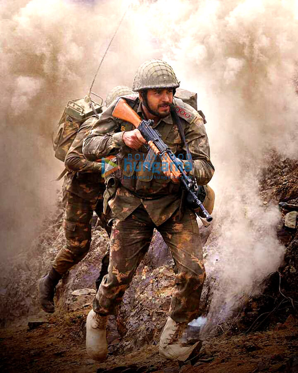

Iam an observant, talks less and observers more. when i feel bored i do something different from regular like cooking , designing etc.
Shershah is a movie of a real hero named Capitan Vikram Batra, who sacrificed his life for his nation. Vikram Batra is a person who is focused towards his works, he used to have a dream to work for his nation.Vikram Batra joined in the army at the age of 22 and worked for 6 years and died at the age of 28.
 